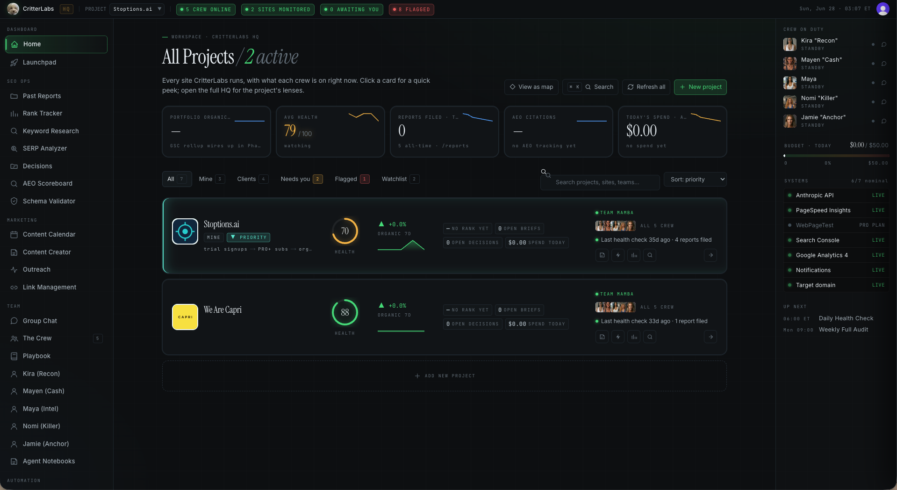

An SEO marketing platform for clients and our own sites — powered by a custom team of AI agents that work like a real SEO department, coordinating in a shared group chat.

Running SEO across multiple sites — for clients and in-house — means juggling rank tracking, technical audits, content, link building, and reporting. Doing it well usually takes a full team. The goal was to compress that team into one tool that actually does the work, not just displays charts.
An SEO marketing platform that monitors every site's health, organic performance, and spend in one cockpit — and a custom AI agent marketing team behind it. Each agent owns a role: Senior SEO, Technical SEO, SEO Marketer, SEO PM, and Link Builder. They collaborate in a shared group chat, hand off tasks, and produce reports and decisions the way a real department would.
The dashboard pulls live data (Search Console, Analytics, PageSpeed, and more) and rolls it into per-project health scores, briefs, and a daily check. Work routes to the right agent; the PM agent coordinates, the specialists execute, and the group chat keeps everything in one thread — so the operator reviews and approves rather than doing it all by hand.
One person can run SEO operations across a portfolio of sites with the leverage of a full team. It's the clearest proof of the model behind our All-Star tier: a cockpit plus custom AI agents trained for a specific domain.
The All-Star tier builds domain-trained agents into your HQ.
Book my discovery call